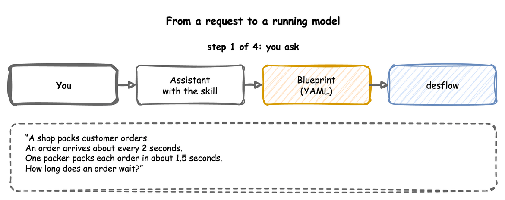

Draft a Model
Describe a process in your own words, and an assistant with the skill turns it into a blueprint. It marks every number it had to assume, checks the load against queueing theory, and runs a study before it gives you an answer.
The GIF follows one request, the packing shop of the Learn tutorial, through the steps the skill teaches:

The sections below hold each step's text, so you can copy the request and check each answer.
Ask
Paste the request into an assistant that has the skill:
Draft
The skill tells the assistant to start from the nearest example (desflow examples list), and to build the model in stages, running the file after each one. It asks you for the numbers the description does not give. When it has to assume one, it marks it with a comment and lists the assumed numbers first in its reply, because you must confirm them.
The description does not say whether orders arrive at random or how much the packing time varies. The draft assumes both:
The skill drafts a blueprint, so the drafted model is the YAML tab. Write Another Form has its Builder form.
The skill drafts a blueprint, so the drafted model is the YAML tab. Write Another Form has its Low-level form.
Check the Load
Before it runs anything, the assistant checks that the packer can keep up. desflow explain gives the queueing formulas' answer:
The packer is busy 75% of the time (ρ), so the queue does not grow without limit, and the formulas give a mean wait of 2.25 seconds (Wq). When a model routes on a variable or has scenario steps, desflow explain gives no estimate, and the skill tells the assistant to check the load by hand: the work of one case, times the arrival rate, must fit inside the capacity. Command Line shows more of desflow explain, and Run a Study compares designs.
Answer From Replications
One run is one sample, so the skill tells the assistant to answer from replications. 20 runs of an hour, each with its own seed spawned from 42:
The mean wait is 2.18 ± 0.13 seconds. The interval, 2.05 to 2.31, holds the 2.25 of the formulas, so the model and the theory agree. The run starts with an empty shop and has no warm-up, which Trusting Results explains how to choose.
Check the Reply
The skill tells the assistant to copy a checklist into its reply and tick each line: every behaviour the request names, the key that makes it, the record that shows it, and a run of the skill's own check on the files. Read the assumed numbers first. Then check that the answer is an interval from replications, not the result of one run.
Full Files
Full files
Write Another Form has the Builder form.
Write Another Form has the Low-level form.